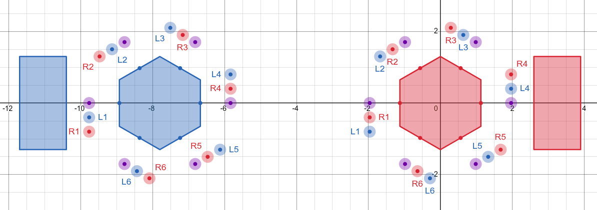
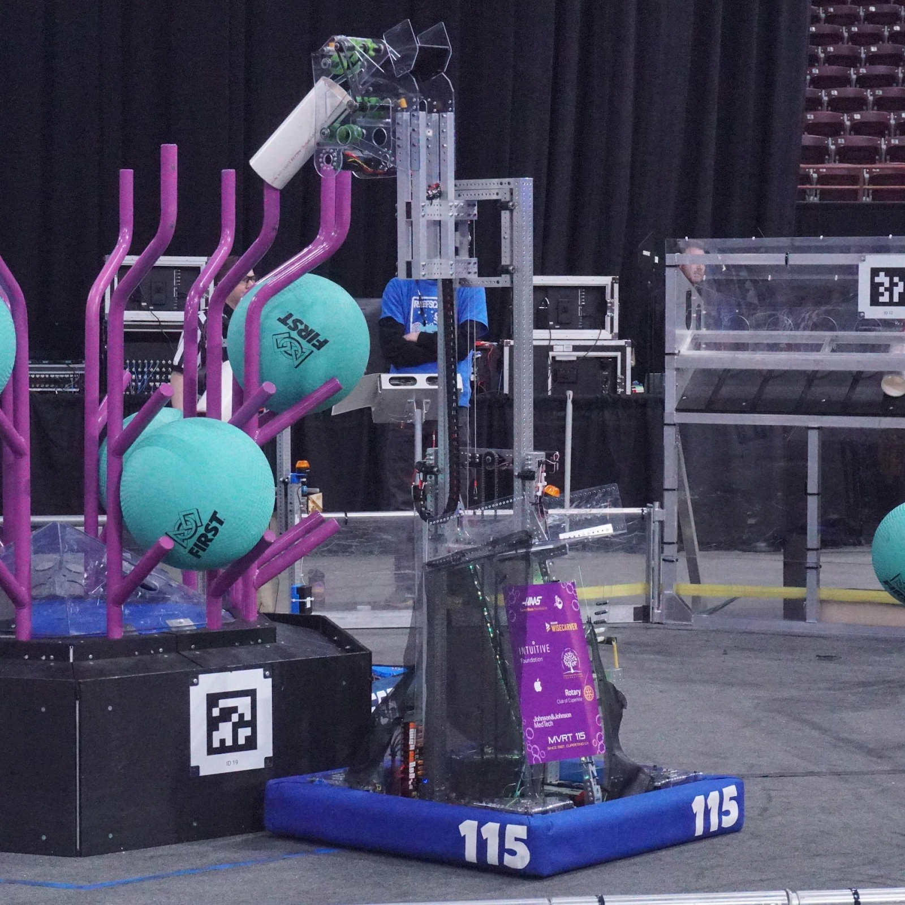

< Back to Projects
AprilTag Computer Vision System

Overview
I was in charge of programming a localization and alignment computer vision system for a competitive FRC robot. The main purpose of the system was to increase each robots cycle times (how fast it could retrieve cargo and score), by allowing the robot to auto-align to a scoring location, compared to needing to do so manually
Research and Defining Objectives
I, with my team, began by defining the system's goals and objectives, namely for the robot to be able to align with a 1”
tolerance to each side of the scoring element. We also decided that defining a proper coordinate system / naming conventions early on would be important for the project,
and thus I coordinated with our drive team to decide naming conventions for each side of the reef (the hexagon scoring location).
As for the software and hardware for the system, after spending some time on research I decided on using an Orange Pi 5 for our
Coprocessor, a Microsoft Lifecam for our camera, and PhotonVision as the main library used.

(🔗 Desmos available here),
Software Development
I split the computer vision system into two main components: localization and alignment. The localization component would be in charge of localizing the robot on the field based on available AprilTags, and the alignment system would use three PID controllers to align the robot to a desired distance and angle from the reef.
Testing & Debugging
As with the development of any software or robot, we ran into problems. To help with debugging and simulation we used AdvantageScope as a logging software.
